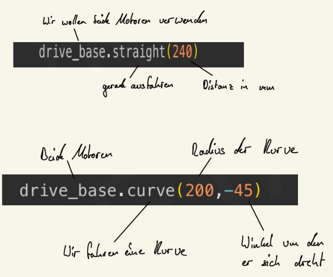

Firmware¶
Pybricks ist eine eigene Firmware, die auf den Lego Spike Prime geflasht werden kann.
Sie ersetzt das vorhandene Betriebssystem von Lego.
Programmiert wird der Spike Prime dann über die Schnittstellen vom Pybricks Team, die sich in der WEB-IDE und in einem Command-Line-Tool finden.
(Wir programmieren den Roboter in der WEB-IDE und downloaden die geänderten Programme in unser Git-Repository. Auf diese Weise verfolgen wir Änderungen.)
Bibliotheken¶
- Fügen dem Programm vorgefertigte Funktionen hinzu
- z.B. Drivebase, Gyro
[!important]
Für euch nicht relevant, solange ihr den Kopf des Programms einfach übernehmt
Deklaration¶
- z.B. Deklarieren einer Variable
- Name
right_motor - Objekt vom Typ Motor
- Port
Port.A - Zusätze
Direction.COUNTERCLOCKWISE - siehe Dokumentation
[!info] Pybricks Documentation — pybricks v3.4.0b2 documentation
Pybricks modules
https://docs.pybricks.com/en/latest/
Drivebase¶
mithilfe von diesem Objekt werden so gut wie alle Fahrtbewegungen vollzogen.
- Motoren deklarieren
- Raddurchmesser
- Abstand der Räder voneinander
- Deklaration von Grundwerten
- Z. B. Speed, Beschleunigung
-
‘ Nutzung vom Gyrosensor einschaltbar
⇒ hier wird dann ein schon trainierter PID verwendet. (fährt sehr gut)
-
Anders als beim EV3 setzt man diese Werte einmal und dann gelten sie bei jeder
Verwendung der Drivebase
Einzelne Fahrten¶
Unsere Fahrten werden als Funktion programmiert. So können sie später einfach aufgerufen werden:
def nameB()
print("Goodybe World")
def nameA()
print("Hello World")
# Ablauf:
nameA()
nameB()
Ergibt:
Hello World
Goodbye World
Syntax¶
Generell gilt:¶
pro Zeile einen Befehl
print("Battery voltage: "+str(hub.battery.voltage())+" mV")
Ausnahme:¶
ein Befehl kann manchmal auch auf mehrere Zeilen aufgeteilt werden:
drive_base = DriveBase(
right_motor,
left_motor,
wheel_diameter=56,
axle_track=96
)
Einrückungen¶
Für Schleifen, Verzweigungen und Funktionen muss der nachfolgende Code eingerückt
werden (Ersatz für geschweifte Klammern in Java)
while hub.imu.heading() >= 5:
left_motor.run(400)
Einheiten¶
- Längen in Millimeter
- Zeit in Millisekunden
- Winkel in Grad
- Straight Speed von 1 - 987
- Straight Acceleration von 1 - 1000
- Die Werte für Turn sollten nicht verändert werden, da er dann nicht mehr genau fährt
Beispiele¶
